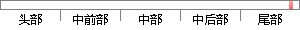

比特币是第一个实现了智能合约的产品，比特币的五种标准交易脚本提供了多方共同签名支付的脚本，又称多重签名支付，多重签名支付可以看做是智能合约的一种表现形式。
片段位置图

相似结果|
1
原句片段：付的脚本，又称多重签名支付，多重签名支付可以看做是智能合约的一种表现形式。
相似片段 1：实际上,具体看生成时设的具体的合同脚本,有些...第三篇、用2-of-2多重签名实现类闪电支付的...Plapps!Plasma链上也能轻松创建app和智能合约了...
相似片段 2：智能合约雏形 - 应用场景说明 由于交易是通过脚本来...另一种是P2SH(Pay-to-Script-Hash支付脚本哈希)。...多重签名应用 合伙经营中,如只有一半以上的的股东同意...
相似片段 3：虽然基于智能合约的多重签名帐户提供了很大的灵活性(无限定制),但从历史上看,...在比特币和比特币相关分叉中,有一个特殊的脚本被称为支付到脚本哈希(Pay-to-...
|
※ 片段修改建议 ※
近似词参考：- 产品：产物
- 标准：尺度
- 交易：买卖 生意业务
- 脚本：剧本
- 提供：供给 供应
- 共同：配合
- 签名：署名
- 支付：付出
- 脚本：剧本
- 签名：署名
- 支付：付出
- 签名：署名
- 支付：付出
- 看做：看作
系统自动生成语句：比特币是第一个实现了智能合约的产物，比特币的五种尺度买卖剧本供给了多方配合署名付出的剧本，又称多重署名付出，多重署名付出可以看作是智能合约的一种表现形式。
注：本片段修改建议为系统自动生成，仅供参考。